Structure Checker is a chemical validation tool detecting and fixing common structural errors or special features that can be potential sources of problems. The Structure Checker wizard is a desktop application for the batch checking and fixing structures of input file(s). Your large files (like SDfiles) are scanned for drawing errors or features you want or don't want to include in the file. This application offers manual operation mode displaying the compounds having errors and allowing the manual modification. Additionally, automatic fixers are provided for many types of issues, and a validation report can be generated as well. A simple guide leads your through the simple steps of the configuration details.
See the detailed list of available checkers.
This chapter gives you a simple walkthrough of the usage of Structure Checker. The major steps are demonstrated on the screenshots of every page of the checking routine.
| 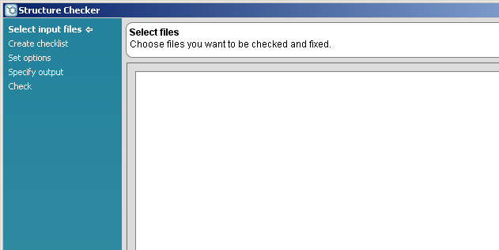 |
In this step you define the files to be checked and fixed. Click on the Add file... button on the right side.
| 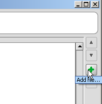 |
| 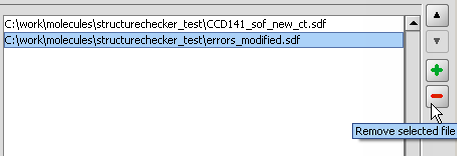 |
| 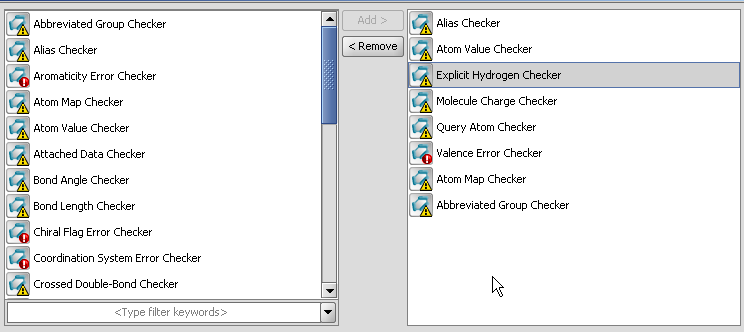 |
In this screen you can see two panels. On the left, all available checkers are listed in alphabetical order. For creating your checklist, just select the actions you want to perform and click the Add button to transfer it to your checklist, i.e., into the right panel.
You can create an ordered list of checkers by moving the selected item(s) with the up or down arrow.
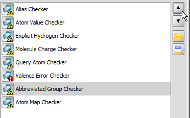
Removal of check elements from the checklist is similarly easy, click the items in the right panel and click Remove. If you'd like to use this checking configuration later, save it by clicking the Save button.
To load a configuration file click the Open Configuration File button, . Browse to the location, and name the file in the Save dialog window.
| 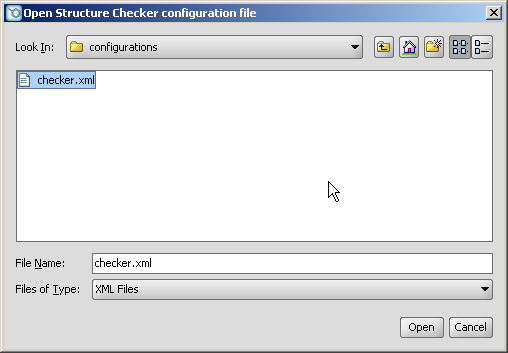 |
Some checkers have options to refine the issue detection. These options appear when you click on the checker in the right panel of the configuration page. It can be configured for each checker what to do when an issue is found.
| 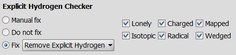 |
Click Next to proceed.
| 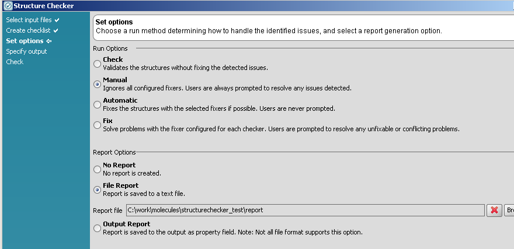 |
Run options
Report options
Each error and issue is commented by the report logged during the checking and fixing procedure.
txt format containing statistics and a detailed list of problems detected.Click Next to proceed.
| 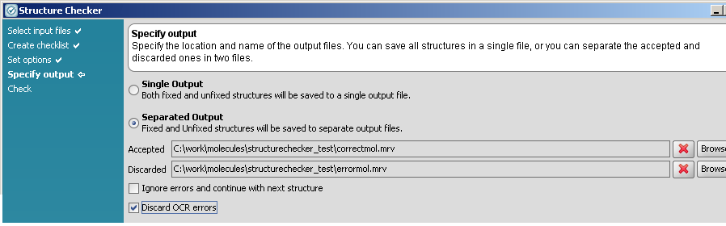 |
| 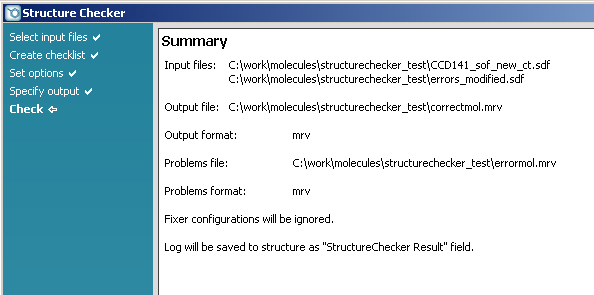 |
In this page you can see the summary of the input and output files, the checking options, and the report options. To change any of these settings, click Back, or click the page name in the left side menu. To run structure check, click Finish.
| 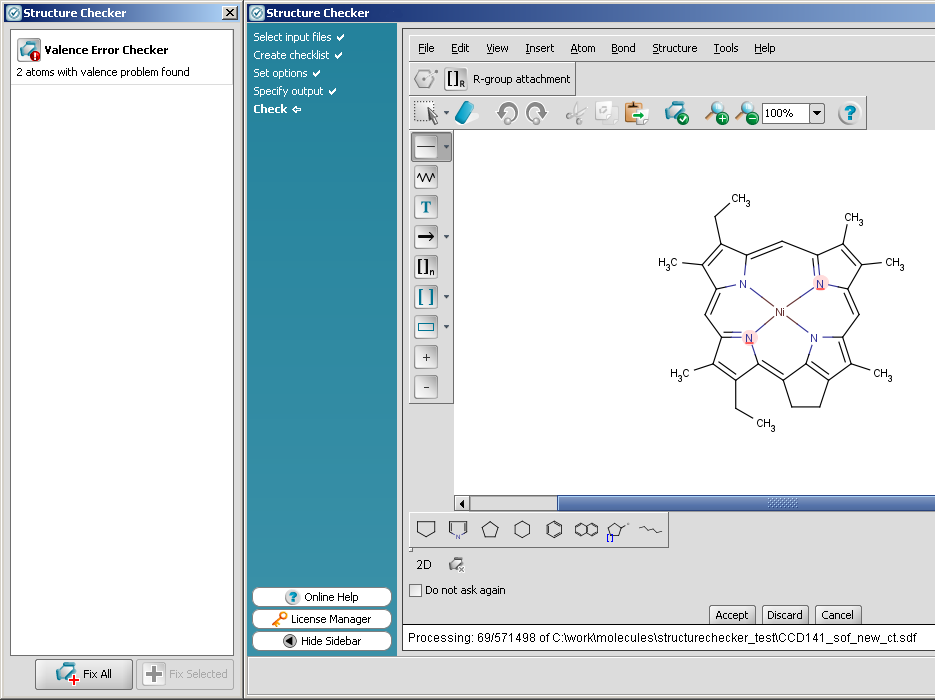 |
If you have chosen a mode which prompts you to manual fixing of structures, a MarvinSketch window is displayed with the incorrect structure, and a Structure Checker side window indicates you the source of the warning. Choose the fixing method by clicking on the warning, and click Fix selected. After fixing the molecule, click on Accept button to accept the changes, or Discard, if you want to save the molecule with errors.
| 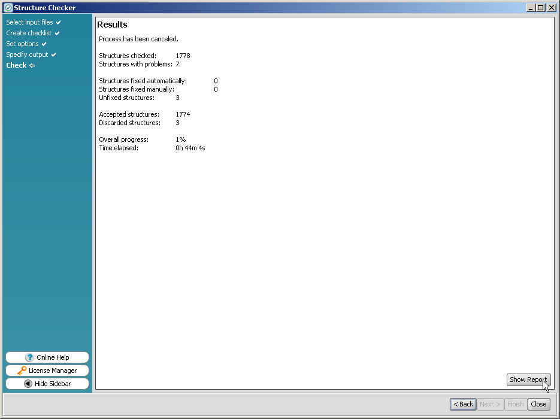 |
The result window summarizes the checking and fixing process, clicking the Show Report button adds the logs at the bottom of the result page.
| 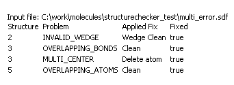 |
structurecheck command line tool